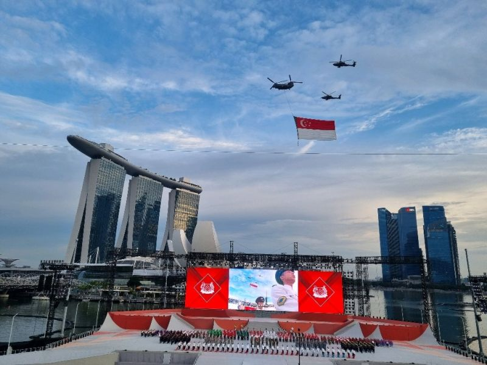

Strategic communications · AI · useful finds
Ideas worth sharing. Tools worth using.
I am Paul Young, a strategic communications leader in Singapore exploring how AI, media and technology shape public trust. This site brings together my work, writing and recommendations.

Choose a path
Not one long page.
Each subject now has its own page, so you can go directly to what is useful.
Ideas
Work & Writing
Strategic communications, public trust, information environments and research.
Open page → TechnologyAI & Tools
Tools I use or am testing, with honest notes and verified referral details where available.
Open page → Personal financeFinance Picks
Platforms I have used, referral links, cautions and clear disclosure.
Open page →About Paul
Communication in a contested information environment.
My professional focus is clear, credible and timely communication, especially when trust is under pressure. I am also interested in practical AI: what genuinely helps people think, create and work better.
10+ yearsPublic affairs and strategic communications leadership
Published researchJournal of Communication Management, 2025